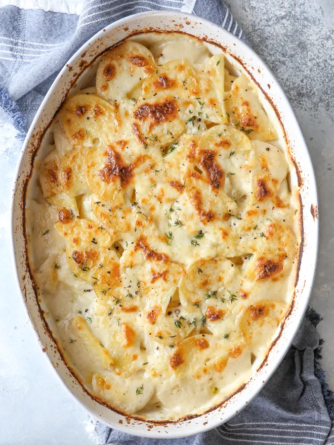

Scalloped Potatoes

Description
Does it get any better than warm scaplloped potatoes on a cold day after a long day of work?
This dish pairs best with ham and asparagus; some fresh, soft rolls as well.
Ingredients
- ¼ cup butter
- 1 large onion diced
- 2 cloves garlic minced
- ¼ cup flour
- 2 cups milk
- 1 cup chicken broth
- ½ teaspoon salt
- ¼ teaspoon pepper
- 3 pounds white potatoes sliced about ⅛” thick
- salt and pepper to taste
Recipe Instructions
- Preheat oven to 350˚F.
- To make the sauce, melt butter, onion and garlic over medium low heat. Cook until onion is softened, about 3 minutes.
Add flour and cook for 1-2 minutes.
- Reduce heat to low. Combine milk and broth. Add a small amount at a time whisking to thicken. The mixture will become
very thick, continue adding a little bit of liquid at a time whisking until smooth.
- Once all of the liquid has been added, bring to a boil over medium heat while continuing to whisk. Stir in salt and
pepper and let boil 1 minute.
- Grease a 9″x13″ baking dish. Place ⅓ of the potatoes in the bottom and season with salt and pepper. Pour ⅓ of the cream
sauce sauce over top.
- Repeat layers ending with cream sauce. Cover and bake for 45 minutes.
- Uncover and bake for an additional 35-45 minutes or until golden brown and potatoes are tender. Broil for 3-4 minutes to
obtain a golden top.
- Allow to rest for 15 minutes before serving.